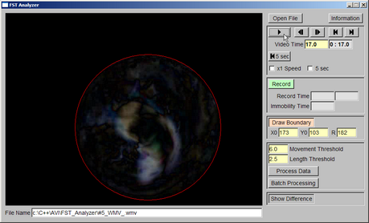

These programs are developed by Dr. Payne Y. Chang in Dr. Daniel Johnston's lab in the Center for Learning and Memory, the University of Texas at Austin. We wish these programs will be helpful and beneficial to your research.
Open field test (OFT) is a rodent behavior test for evaluating animals' locomotion and anxiety level. OFTAnalyzer evaluates and analyzes video clips of open field tests and returns quantitative results. If you are interested in this program, please click the following link.
Analysis in Action
Forced swim test (FST) is a rodent behavior test for evaluating animals' depression level. FSTAnalyzer evaluates and analyzes video clips of forced swim tests and returns quantitative results. If you are interested in this program, please click the following link.
Snapshot

Elevated plus maze test (EPM) is a rodent behavior test for evaluating animals' anxiety level. EMPAnalyzer evaluates video clips of EPM test and returns the number of open arm entry, the number of closed arm entry, the time in open arms and the total time. If you are interested in EPMAnalyzer, please click the following link.
Analysis in Action
Eyelid conditioning is a very good model to study learning processes in animals. EyelidTracker is developed with Igor Pro to analyze and quantify eyelid positions during experiments. If you are interested in EyelidTracker, please click the following link.
Analysis in Action